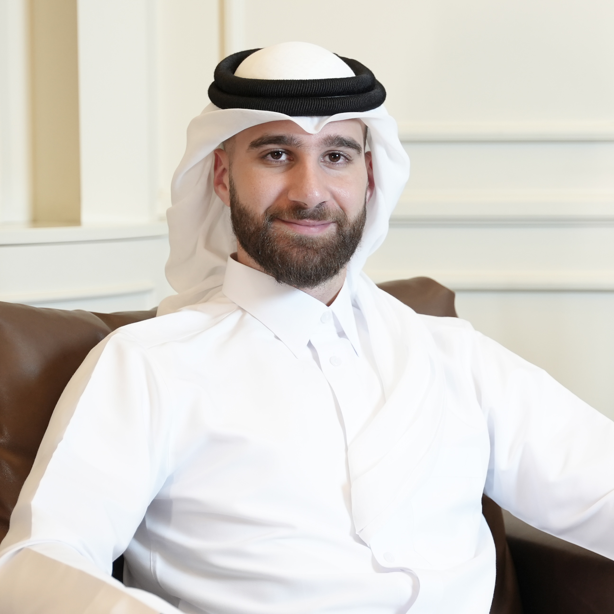
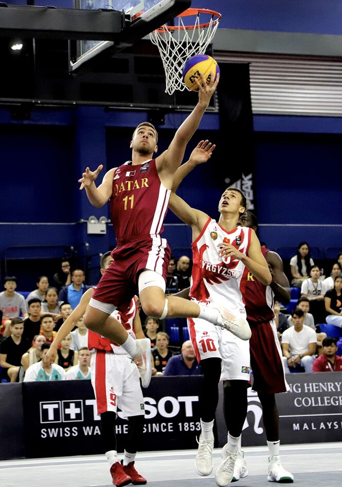
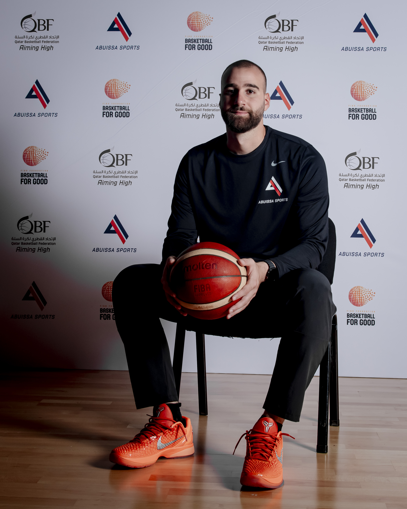

About

I'm a Qatari professional with a background spanning sport, entrepreneurship, and public-sector strategy. Shaped by years of international education in the United States, I've built a career around clear communication, disciplined execution, and a commitment to long-term impact.
As the first Qatari to compete at the NCAA Division I level, I've carried that experience into building sport and community in Qatar — as founder of Abuissa Sports and as a FIBA Foundation Youth Leader.
On the Court

I made history as the first Qatari athlete to compete at the NCAA Division I level, playing for Sacred Heart University and contributing to a historic 21-win season.
With Qatar's National Basketball Team, I captained the U16 and U19 squads and became the youngest athlete to compete at the 2018 Asian Games in Jakarta. Before that, at Williston Northampton School in the U.S., I was a Northeast Champion in the 110m hurdles and earned the Denman Award as Athlete of the Year.

Abuissa Sports

In January 2021, I founded Abuissa Sports — a youth-focused organization dedicated to athlete development, education, and character building, and home to one of Qatar's first Qatari-owned and operated basketball academies.
I lead its overall strategy and operations, from budgeting and recruitment to partnerships and program execution. We've brought NBA-standard coaching to young athletes through elite training camps, and built strong relationships with national institutions, international partners, and sports governing bodies along the way.

FIBA Youth Leader

I was selected to represent the State of Qatar as a FIBA Foundation Youth Leader, designing and delivering "Basketball for Good" programs that promote inclusion, leadership, and social development.
Through these initiatives I led camps serving 135+ participants — including refugee and displaced communities — and represented the work at public events and community forums, aligning each program with the United Nations Sustainable Development Goals.

Basketball for Good
Through the FIBA Foundation's "Basketball for Good" initiative, I design and deliver programs that use the game as a tool for inclusion, leadership, and social development — bringing young people together regardless of background.
These camps have served over 135 participants, including refugee and displaced communities, and are built around the United Nations Sustainable Development Goals. For me, it's proof that basketball is about far more than the scoreboard — it's a way to build character and community.